01
Fiber laser cutting machine
Profiles, blanks and cut-outs produced directly from DXF files on a 1,500 × 3,000 mm bed.
| Type | Laser cutting machine |
|---|---|
| Power | 2 kW |
| Bed size | 1,500 × 3,000 mm |
| Use | Sheet cutting from DXF |
| Quantity | 1 |
The complete equipment register for our Ghiloth plant — 25 equipment categories with their documented specifications and quantities. Each machine is linked to the manufacturing capability it supports.
Specifications are as documented in our equipment register. Achievable results depend on material grade, thickness and part geometry and are confirmed for each enquiry.
| No. | Equipment | Capability | Key specification | Use | Qty |
|---|---|---|---|---|---|
| 01 | Fiber laser cutting machine | Fiber Laser Cutting | 2 kW; 1,500 × 3,000 mm | Sheet cutting from DXF | 1 |
| 02 | CNC hydraulic bending machine (4,000 mm) | CNC Sheet Metal Bending | Up to 8 mm; 4,000 mm | Sheet bending | 1 |
| 03 | CNC hydraulic bending machine (3,000 mm) | CNC Sheet Metal Bending | Up to 10 mm; 3,000 mm | Sheet bending | 1 |
| 04 | NC pneumatic shearing machine | Sheet Metal Shearing | Up to 2.5 mm; 2,500 mm | Sheet shearing | 1 |
| 05 | NC hydraulic shearing machine | Sheet Metal Shearing | Up to 6 mm; 3,000 mm | Sheet shearing | 1 |
| 06 | Cut-to-length lines | Cut-to-Length Processing | Up to 3 mm / 1,300 mm wide; Up to 2 mm / 1,000 mm wide | Sheet shearing | 2 (1 of each) |
| 07 | CNC pneumatic perforation machine | Metal Perforation | Up to 3 mm; 1,280 mm | Sheet perforation | 1 |
| 08 | Mechanical perforation machines (5 mm) | Metal Perforation | Up to 5 mm; 1,280 mm | Sheet perforation | 4 |
| 09 | CNC perforation machine (1,000 mm) | Metal Perforation | Up to 3 mm; 1,000 mm | Sheet perforation | 1 |
| 10 | Mechanical perforation machines (1.5 mm) | Metal Perforation | Up to 1.5 mm; 500 mm | Sheet perforation | 7 |
| 11 | Mechanical expanded metal machines | Expanded Metal Manufacturing | Up to 2.5 mm; 1,250 mm | Sheet expanding | 3 |
| 12 | CNC vertical machining centre (1,600 × 700 mm) | CNC Vertical Machining | 1,600 × 700 mm; 24 tools; 12,000 rpm; Mitsubishi M80A | Tool, die and component machining | 1 |
| 13 | CNC vertical machining centre (800 × 400 mm) | CNC Vertical Machining | 800 × 400 mm; 20 tools; 12,000 rpm; Delta | Tool, die and component machining | 1 |
| 14 | Surface grinder (1,000 × 400 mm) | Surface Grinding | 1,000 × 400 mm; Ø 360 × 50 mm thick | Upper surface grinding | 1 |
| 15 | Surface grinder (350 × 150 mm) | Surface Grinding | 350 × 150 mm; Ø 200 × 15 mm thick | Upper surface grinding | 1 |
| 16 | Mechanical lathes | Turning & Lathe Machining | 4,200 × Ø 1,000 mm; 3,000 × Ø 400 mm; 1,800 × Ø 200 mm | Component turning | 3 |
| 17 | SPM linear welding machines | TIG / Argon, Pulse & Linear Welding | 1,000 mm | Argon welding | 3 |
| 18 | Pulse welding machines | TIG / Argon, Pulse & Linear Welding | Up to 3 mm | Argon welding | 2 |
| 19 | MIG welding machines | MIG Welding | Up to 10 mm | Wire-feed welding | 5 |
| 20 | Pneumatic seam welding machine | Pneumatic Seam Welding | Up to 2 mm | Seam / overlap welding | 1 |
| 21 | Automatic slip rolling machines | Sheet Metal Rolling | 1,300 mm | Sheet rolling | 2 |
| 22 | Mechanical power presses | Power Pressing & Stamping | 10-ton, 5-ton and 65-ton pneumatic (high-speed) | Cutting, punching and blanking | Being confirmed by JASSCO |
| 23 | Hydraulic pipe bending machine | Hydraulic Pipe Bending | Up to 5 mm | Pipe profile bending | 1 |
| 24 | Hexa / saw cutting machine | Metal Saw Cutting | Up to 400 × 100 mm | Parting solid metal | 1 |
| 25 | EOT overhead cranes | Material handling | 5 ton – 1 crane; 12 ton – 1 crane | Material handling | 2 |
Profiles, blanks and cut-outs produced directly from DXF files on a 1,500 × 3,000 mm bed.
| Type | Laser cutting machine |
|---|---|
| Power | 2 kW |
| Bed size | 1,500 × 3,000 mm |
| Use | Sheet cutting from DXF |
| Quantity | 1 |
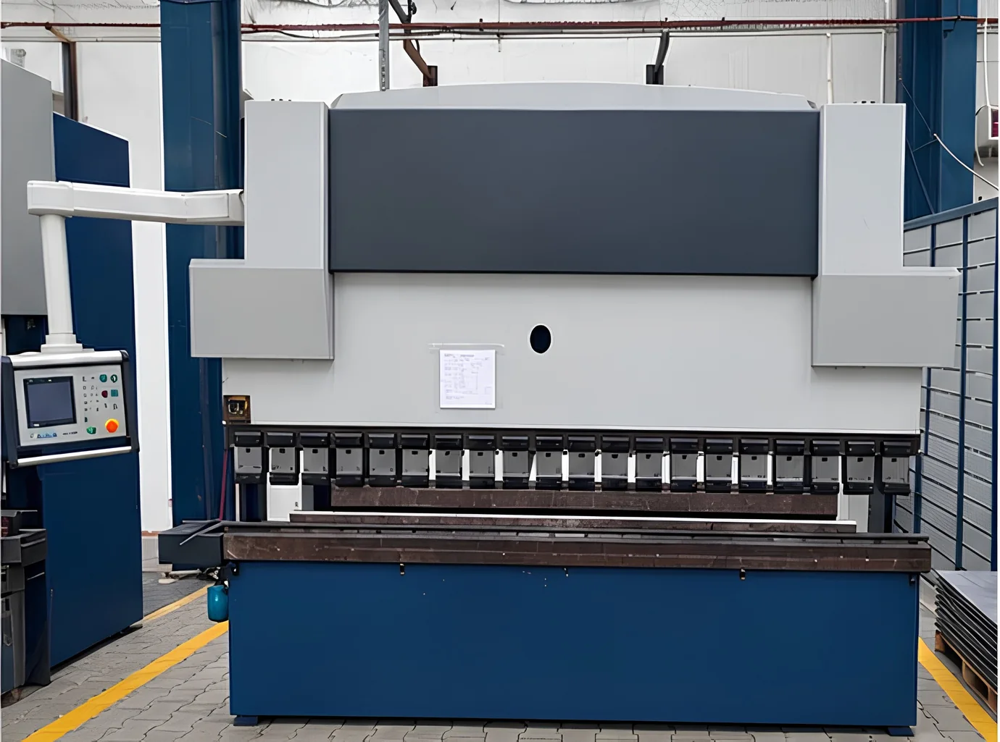
Long-length bending of panels, channels and trays up to 4,000 mm sheet width.
| Type | 3-axis bending machine |
|---|---|
| Thickness capacity | Up to 8 mm |
| Sheet width | 4,000 mm |
| Use | Sheet bending |
| Quantity | 1 |

Heavier-gauge bending up to 10 mm thickness across 3,000 mm sheet width.
| Type | 3-axis bending machine |
|---|---|
| Thickness capacity | Up to 10 mm |
| Sheet width | 3,000 mm |
| Use | Sheet bending |
| Quantity | 1 |
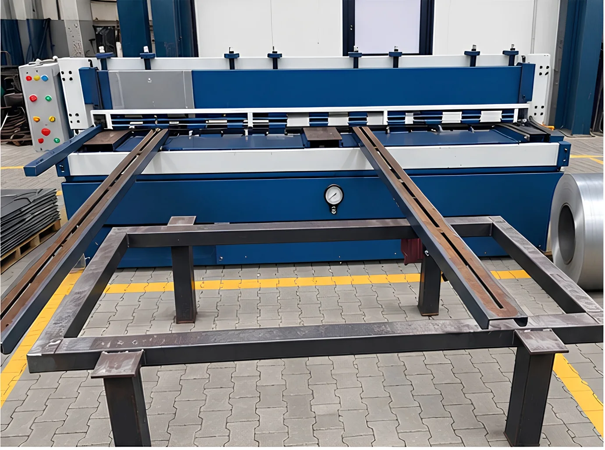
Straight-line shearing of thinner sheet up to 2.5 mm and 2,500 mm wide.
| Type | Shearing machine |
|---|---|
| Thickness capacity | Up to 2.5 mm |
| Sheet width | 2,500 mm |
| Use | Sheet shearing |
| Quantity | 1 |
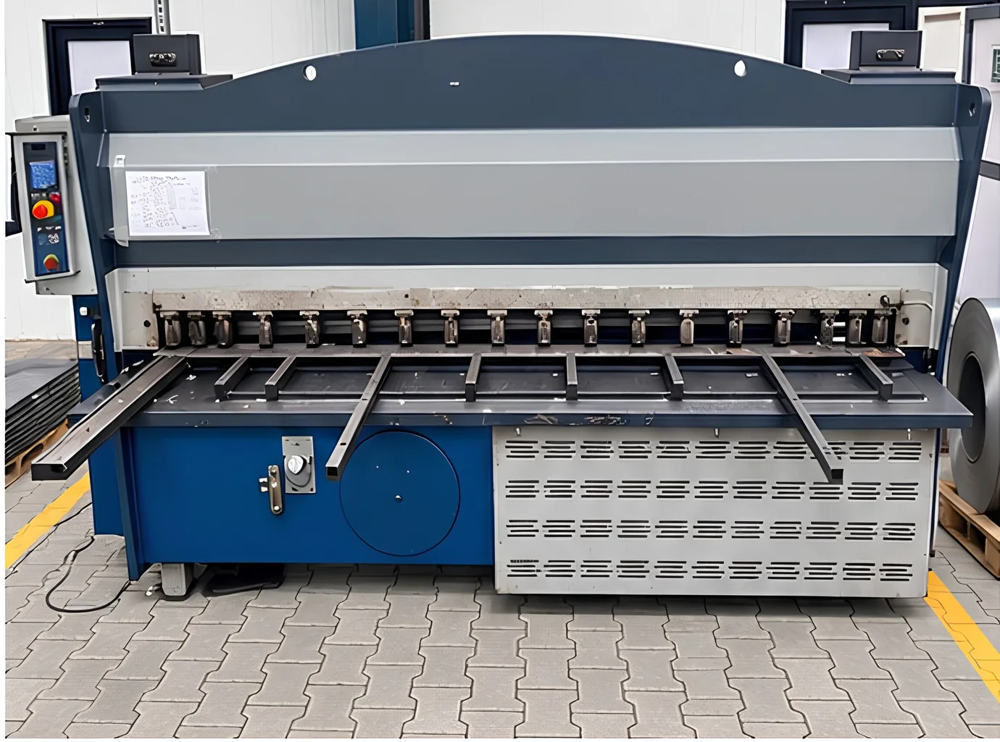
Shearing of plate and sheet up to 6 mm thickness and 3,000 mm wide.
| Type | Shearing machine |
|---|---|
| Thickness capacity | Up to 6 mm |
| Sheet width | 3,000 mm |
| Use | Sheet shearing |
| Quantity | 1 |
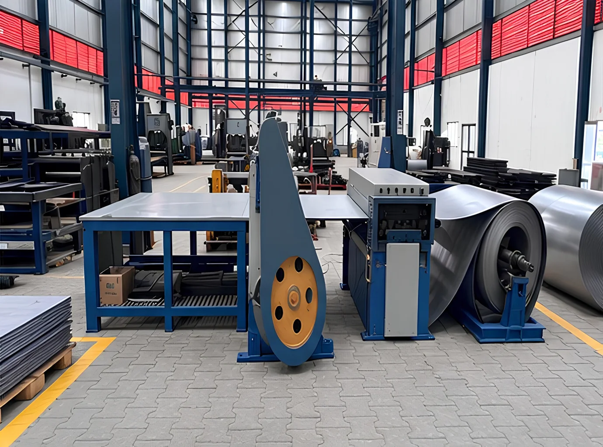
Two automatic lines that decoil and cut sheet to programmed lengths.
| Type | Automatic shearing |
|---|---|
| Line A | Up to 3 mm / 1,300 mm wide |
| Line B | Up to 2 mm / 1,000 mm wide |
| Use | Sheet shearing |
| Quantity | 2 (1 of each) |

CNC-controlled perforation for sheet up to 3 mm and 1,280 mm wide.
| Type | Perforation machine |
|---|---|
| Thickness capacity | Up to 3 mm |
| Sheet width | 1,280 mm |
| Use | Sheet perforation |
| Quantity | 1 |
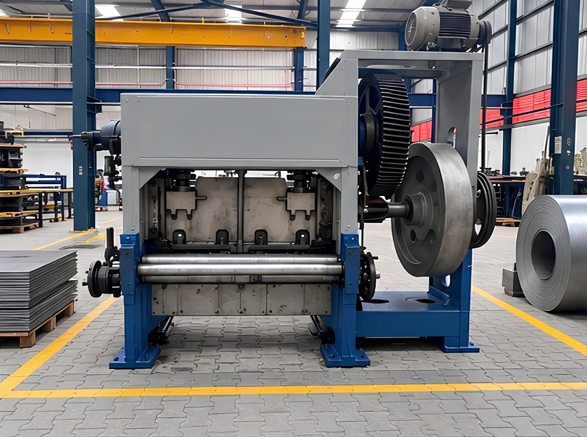
Four mechanical perforation machines for heavier perforated sheet up to 5 mm.
| Type | Perforation machine |
|---|---|
| Thickness capacity | Up to 5 mm |
| Sheet width | 1,280 mm |
| Use | Sheet perforation |
| Quantity | 4 |
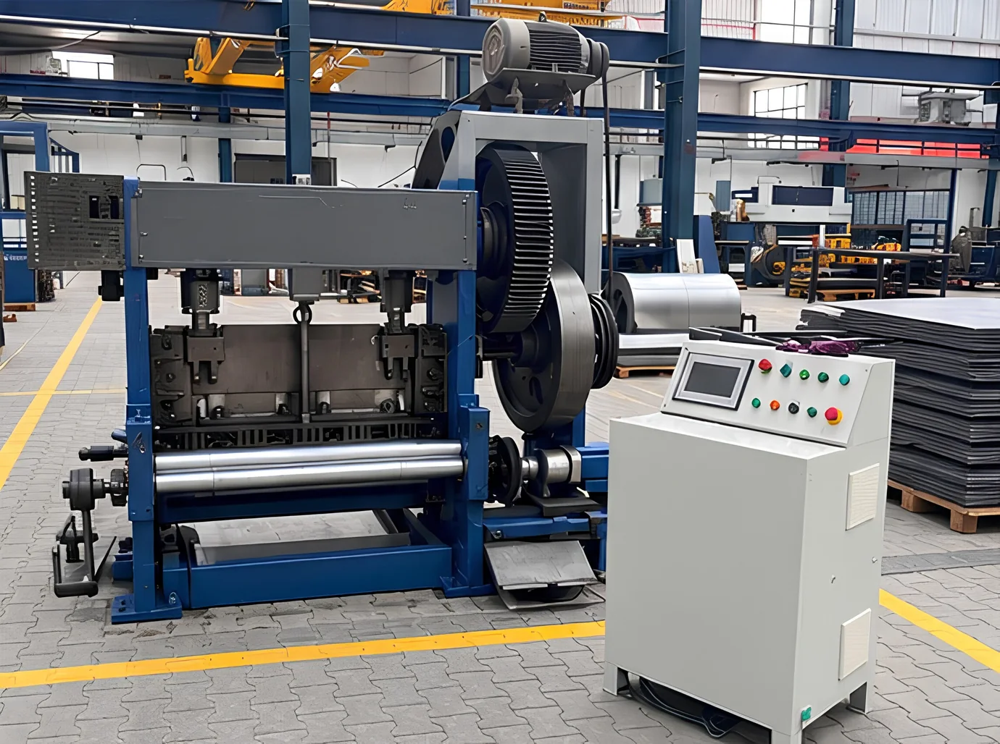
CNC perforation for sheet up to 3 mm thickness and 1,000 mm width.
| Type | Perforation machine |
|---|---|
| Thickness capacity | Up to 3 mm |
| Sheet width | 1,000 mm |
| Use | Sheet perforation |
| Quantity | 1 |
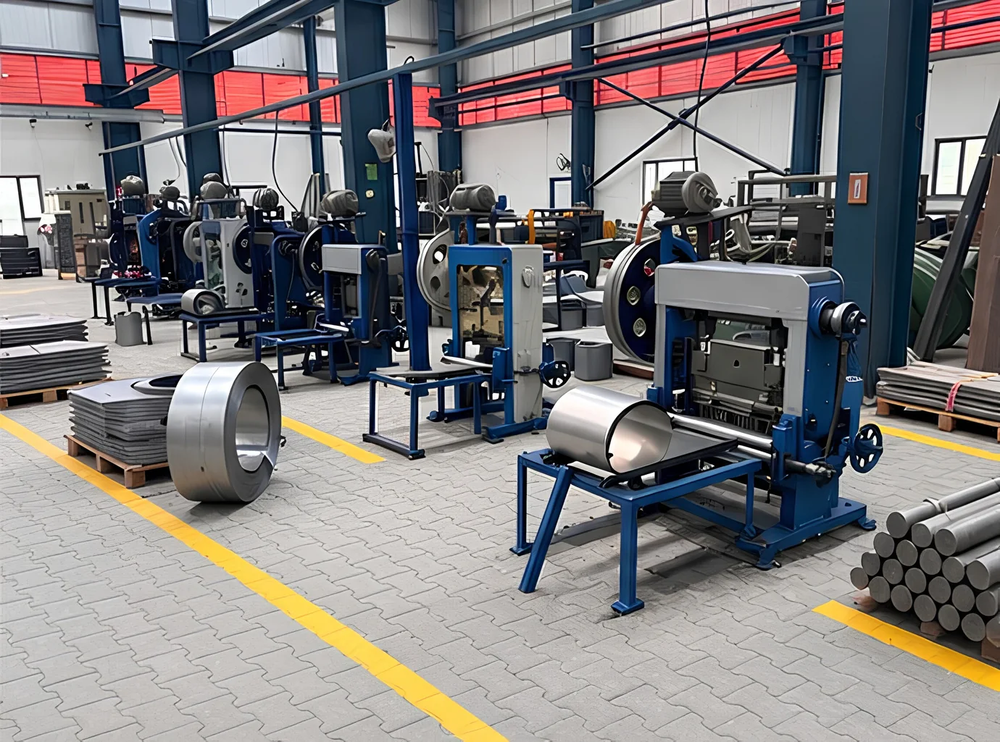
Seven machines for light-gauge perforated strip and narrow sheet up to 500 mm wide.
| Type | Perforation machine |
|---|---|
| Thickness capacity | Up to 1.5 mm |
| Sheet width | 500 mm |
| Use | Sheet perforation |
| Quantity | 7 |

Three machines that slit and stretch sheet into expanded metal mesh.
| Type | Expanded metal machine |
|---|---|
| Thickness capacity | Up to 2.5 mm |
| Sheet width | 1,250 mm |
| Use | Sheet expanding |
| Quantity | 3 |

Larger-bed VMC for tooling, dies and machined components.
| Bed size | 1,600 × 700 mm |
|---|---|
| Tool magazine | 24 tools |
| Spindle speed | 12,000 rpm |
| Controller | Mitsubishi M80A |
| Use | Tool, die and component machining |
| Quantity | 1 |
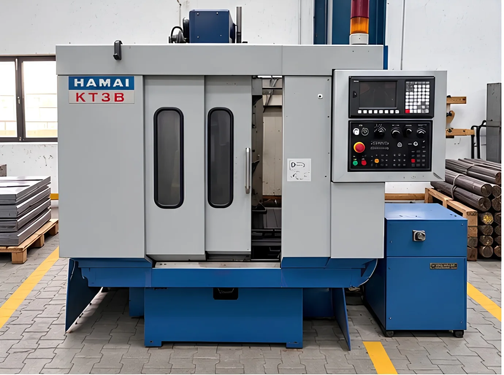
Compact VMC for smaller tooling and component machining.
| Bed size | 800 × 400 mm |
|---|---|
| Tool magazine | 20 tools |
| Spindle speed | 12,000 rpm |
| Controller | Delta |
| Use | Tool, die and component machining |
| Quantity | 1 |
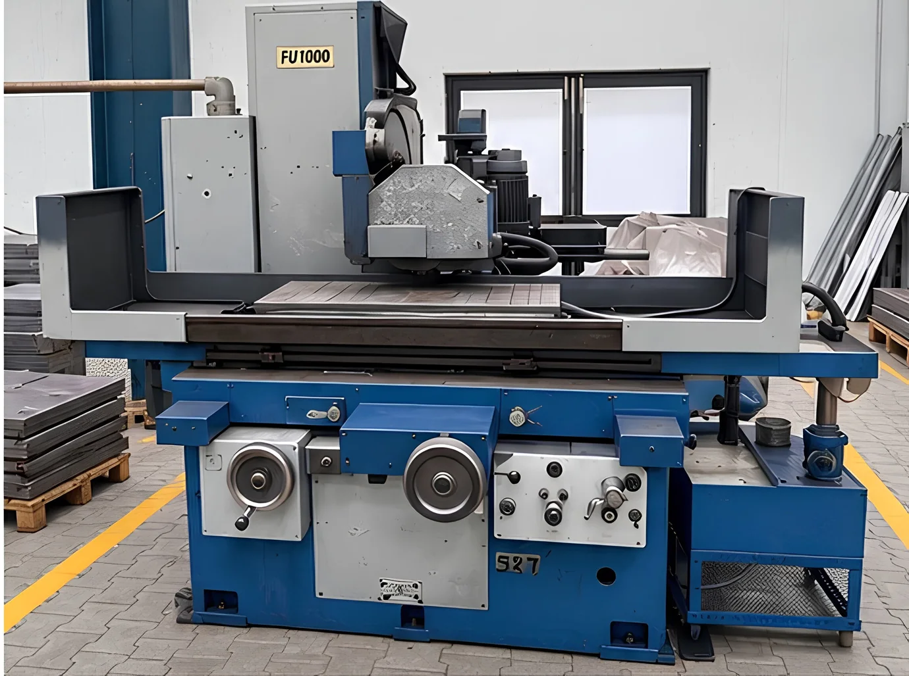
Surface grinding of larger flat parts, tooling and die components.
| Type | Grinding machine |
|---|---|
| Bed size | 1,000 × 400 mm |
| Stone size | Ø 360 × 50 mm thick |
| Use | Upper surface grinding |
| Quantity | 1 |
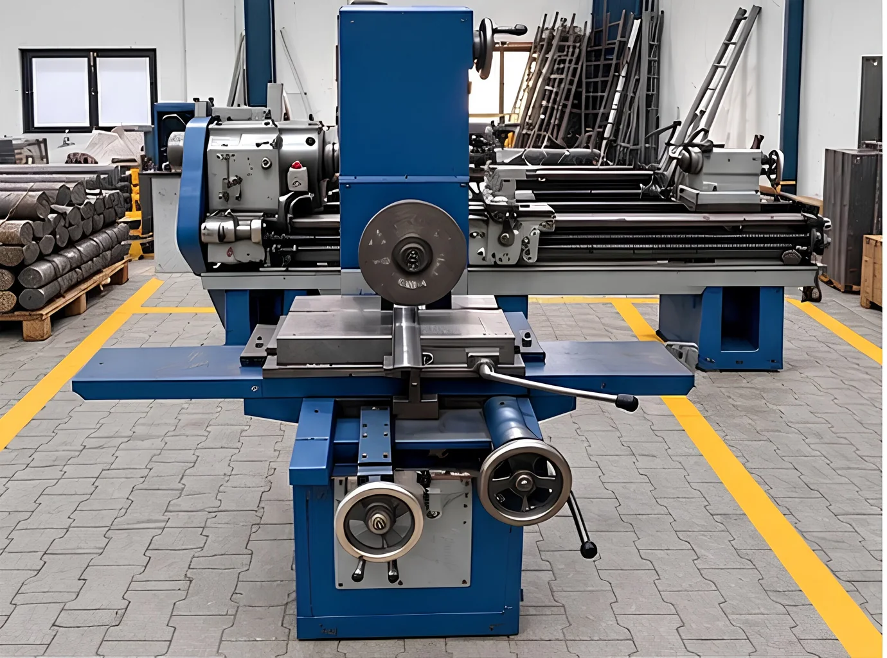
Surface grinding of small parts and tool inserts.
| Type | Grinding machine |
|---|---|
| Bed size | 350 × 150 mm |
| Stone size | Ø 200 × 15 mm thick |
| Use | Upper surface grinding |
| Quantity | 1 |
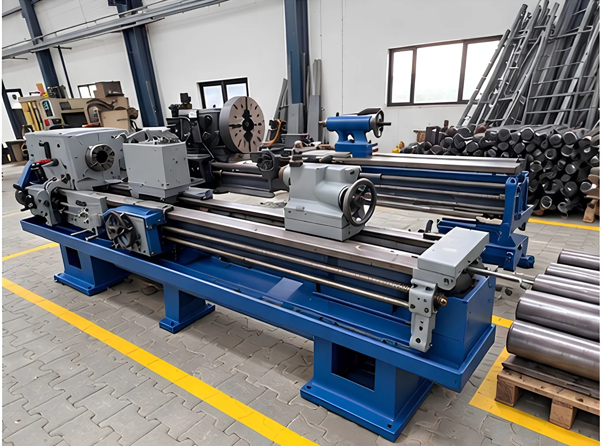
Three lathes covering long shafts through to smaller turned parts.
| Bed size 1 | 4,200 × Ø 1,000 mm |
|---|---|
| Bed size 2 | 3,000 × Ø 400 mm |
| Bed size 3 | 1,800 × Ø 200 mm |
| Use | Component turning |
| Quantity | 3 |
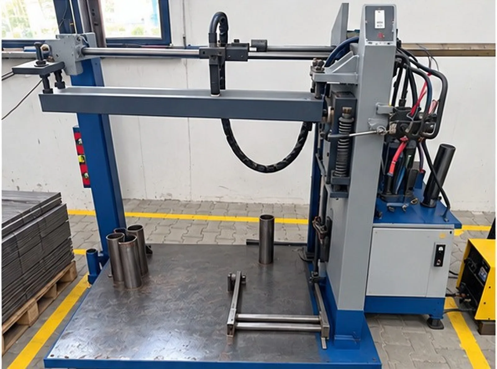
Special-purpose machines for straight argon-shielded welds up to 1,000 mm long.
| Type | Hydraulic linear welding machine |
|---|---|
| Weld length | 1,000 mm |
| Use | Argon welding |
| Quantity | 3 |
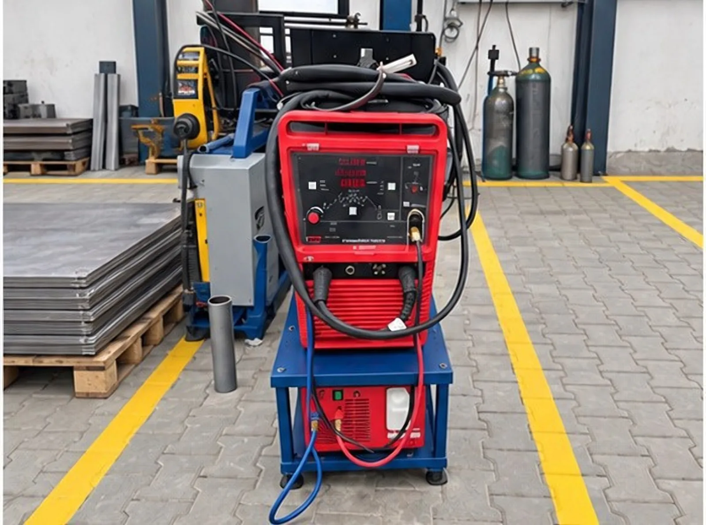
Pulse argon welding for thin-gauge material up to 3 mm.
| Type | Argon welding machine |
|---|---|
| Thickness capacity | Up to 3 mm |
| Use | Argon welding |
| Quantity | 2 |

Five wire-feed MIG welding sets for fabrications up to 10 mm.
| Type | MIG welding machine |
|---|---|
| Thickness capacity | Up to 10 mm |
| Use | Wire-feed welding |
| Quantity | 5 |
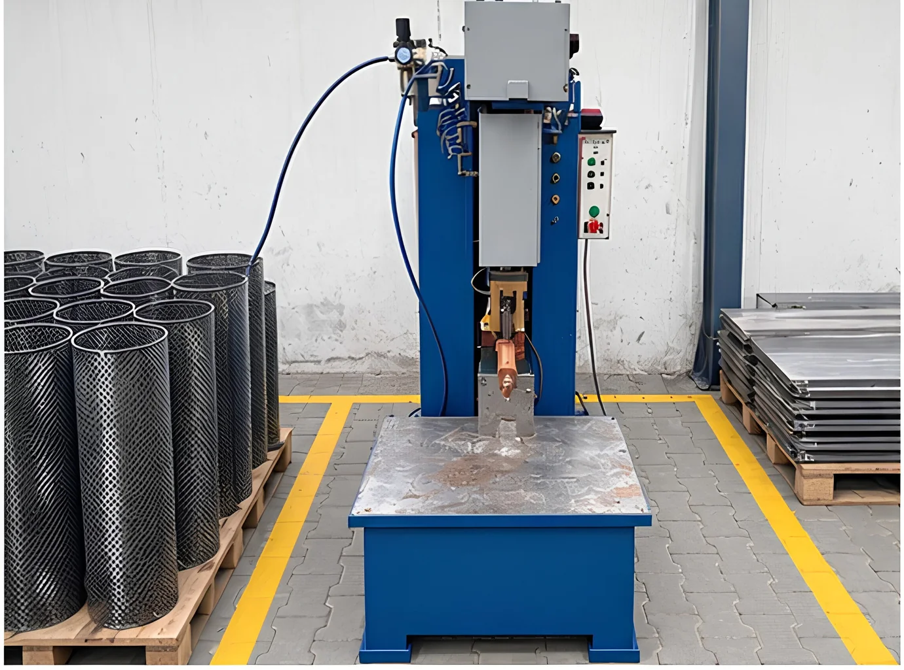
Seam and overlap welding of sheet up to 2 mm, for example on tubular parts.
| Type | Pneumatic transformer welding |
|---|---|
| Thickness capacity | Up to 2 mm |
| Use | Seam / overlap welding |
| Quantity | 1 |

Rolling sheet into cylinders and curved sections up to 1,300 mm feeding width.
| Type | Rolling machine |
|---|---|
| Feeding width | 1,300 mm |
| Use | Sheet rolling |
| Quantity | 2 |
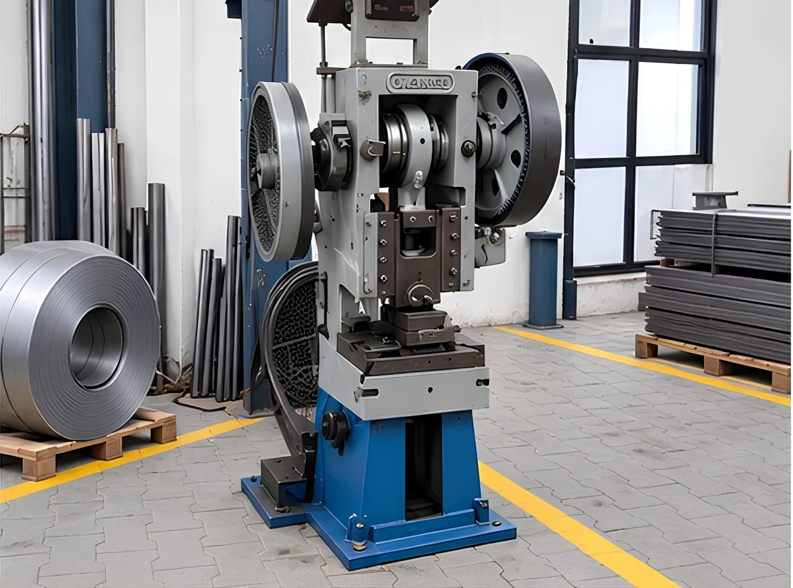
Press capacity for cutting, punching and blanking with tooling.
| Press capacities | 10-ton, 5-ton and 65-ton pneumatic (high-speed) |
|---|---|
| Use | Cutting, punching and blanking |
| Quantity | Being confirmed by JASSCO |
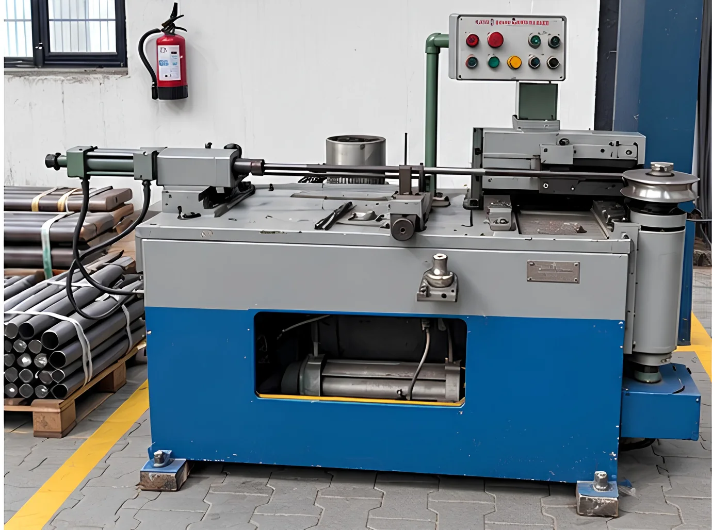
Hydraulic bending of pipe profiles with wall thickness up to 5 mm.
| Type | Pipe bending machine |
|---|---|
| Thickness capacity | Up to 5 mm |
| Use | Pipe profile bending |
| Quantity | 1 |
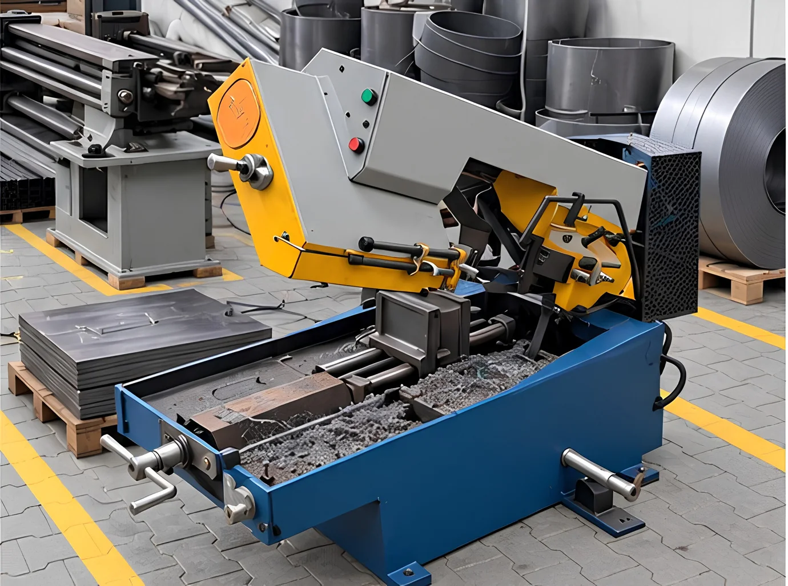
Parting of bar, section and solid stock.
| Type | Saw cutting machine |
|---|---|
| Listed capacity | Up to 400 × 100 mm |
| Use | Parting solid metal |
| Quantity | 1 |

Internal lifting for metal stock, work in progress and finished assemblies.
| Type | Overhead crane |
|---|---|
| Capacity 1 | 5 ton – 1 crane |
| Capacity 2 | 12 ton – 1 crane |
| Quantity | 2 |
| Use | Material handling |
Send it to our manufacturing team. We review the technical requirements and come back to you with questions or a quotation.